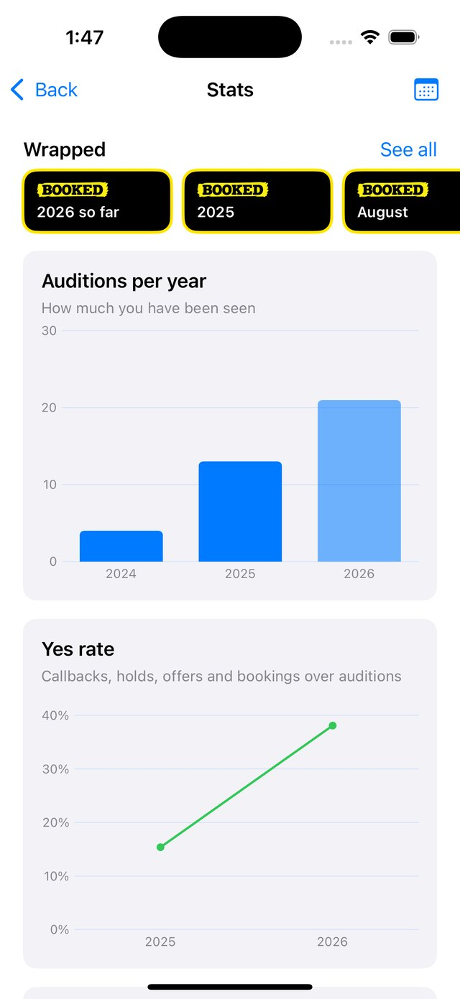
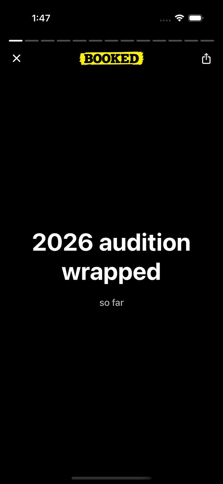

A reader for your sides, any hour.
Import the PDF. Booked reads the other parts with you, listens for your line, and comes in on cue. Record the self-tape right there, as many takes as you need.
iPhone. Made in Toronto by a working actor.


How it works
Import the sides
Tap Import PDF, or share the PDF straight from the email it came in. Booked works out who says what, including your handwritten start and end marks.
Rehearse with a reader that listens
Pick your part. The reader plays everyone else, waits while you speak, and comes in when you finish. Blank on a line? Say “line” and it feeds you the next few words.
Record the take
Same scene, same reader, with the camera on. Takes save to your Photos library, ready to send.
Keep the log
Log each audition in a few seconds: project, role, casting, and how it went. Booked turns the log into charts, and into a Wrapped at the end of the year.
The log is the only part of Booked that asks you to sign in, and it is optional.


Made for actors by an actor
I've been acting for over a decade (The Boys, Reacher, Assassin's Creed). I know the feeling: your audition is due tomorrow, your friend isn't free, your roommate is tired of reading, and casting doesn't like hearing you act with a recording of yourself.
I made Booked to give you a reader at 10 a.m. or midnight, for as many takes as you need. A responsive, natural-sounding reader is expensive to run, which is why Booked has a price. I've done my best to keep it well below hiring a reader, so it's sustainable.
Break a leg,
Aris
Rehearsals are heard on the phone itself, and takes never leave it. The details are in the privacy policy.